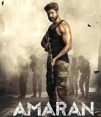

Action/Adventure• 1h 58m
A true-life story of Major Mukund Varadarajan, a commissioned officer in the Indian Army`s Rajput Regiment, who was posthumously awarded the Ashok Chakra for his valor during a counterterrorism operation while on deputation to the 44th Rashtriya Rifles battalion in Jammu and Kashmir.